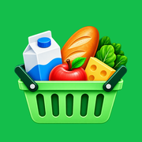

Mijn BoodschappenPrivacybeleid
Voor de app Mijn Boodschappen, van Stefano Graanoogst.
Versie: 22 oktober 2026
Mijn Boodschappen verwerkt alleen gegevens die nodig zijn om de app en de bijbehorende functies te laten werken.
Welke gegevens verwerken we?
- Accountgegevens: naam, e-mailadres en een technisch account-ID. Stel je een profielfoto in, dan wordt een verkleinde versie daarvan bij je account bewaard. Je kunt die foto altijd weer verwijderen.
- Boodschappen en lijsten: producten, aantallen, status, opgeslagen lijsten en gedeelde lijsten die je zelf aanmaakt. Ook je eerdere boodschappenrondes (geschiedenis) worden bewaard; de persoonlijke assistent gebruikt die om tips op je telefoon te berekenen. Zet je een aanbieding op je lijst, dan worden de prijs, de actie en de einddatum bij dat product bewaard.
- Familiegegevens: familiecodes, deelcodes en namen die je binnen een gedeelde lijst gebruikt. Binnen een familie wordt ook opgeslagen wie Pro heeft.
- Planning, voorraad en budget: je persoonlijke boodschappenlijst, je weekplanning, je voorraad (met hoe lang producten bij jou meestal houdbaar zijn), je budget en uitgaven (met de winkel waar je ze deed), je gekozen supermarkt en het aantal porties dat je bij recepten kiest. Deze gegevens worden aan je account gekoppeld, zodat ze op al je apparaten beschikbaar zijn. Alleen jij kunt ze bekijken, behalve een voorraad die je met je familie deelt.
- Gegevens op je apparaat: instellingen zoals thema, scanner en meldingen worden alleen op je eigen apparaat bewaard. Zet je voorraadmeldingen aan, dan plant de Android-app die op je telefoon zelf in, met de namen van de producten in de melding; daarvoor wordt niets naar een server gestuurd. Ook een kopie van je laatste boodschappenlijst, de voorstellen bij “Snel opnieuw toevoegen” en het aantal eerdere lijsten worden op je apparaat bewaard, zodat de app direct opent. Bij uitloggen wordt dit gewist.
- Productsuggesties en scannen: als je een product typt of een barcode scant, worden de zoekterm of de barcode naar Open Food Facts gestuurd om productnamen en foto’s op te halen. Er worden geen naam, e-mailadres of andere persoonsgegevens meegestuurd.
- Zoekopdrachten voor aanbiedingen: als je aanbiedingen zoekt, worden alleen het zoekwoord (bijvoorbeeld “melk”) en de gekozen supermarkt verstuurd. Er worden geen naam, e-mailadres of andere persoonsgegevens meegestuurd.
- Camera: de camera wordt alleen gebruikt wanneer je de barcodescanner opent. Camerabeelden worden niet als boodschappenlijstgegevens opgeslagen.
Waarvoor gebruiken we deze gegevens?
Om je aan te melden, boodschappenlijsten op te slaan en te synchroniseren, gedeelde lijsten/families te laten werken, je account te beheren en functies zoals barcode scannen aan te bieden.
Externe dienstverleners
Google Firebase wordt gebruikt voor je account en voor het online opslaan van je lijsten, weekplanning, voorraad en budget, en voor het delen van lijsten.
PrijsProfeet levert de actuele aanbiedingen van supermarkten. Zoekopdrachten lopen via een eigen tussenserver bij Cloudflare, die alleen het zoekwoord en de supermarkt doorgeeft. Ook de persoonlijke assistent zoekt op deze manier aanbiedingen voor producten die je vaak koopt; de tips zelf worden op je telefoon berekend.
Open Food Facts (en de verwante databanken Open Beauty Facts en Open Products Facts) levert productnamen en merken bij suggesties, en productfoto’s bij scannen of als je “Productfoto’s tonen” aanzet.
De iconen zitten in de app zelf. Daarvoor wordt geen verbinding met een andere dienst gemaakt.
Delen met anderen
Gegevens uit een gedeelde familie- of boodschappenlijst, en een voorraad die je met je familie deelt, kunnen zichtbaar zijn voor de personen die jij toegang geeft tot die gedeelde lijst. Leden van je familie zien ook je naam, je profielfoto (als je die hebt ingesteld) en of jij Pro hebt.
Bewaren en verwijderen
Je kunt je geschiedenis wissen via Overzicht → Geschiedenis → Geschiedenis wissen. Je kunt je account vanuit Meer → Mijn account → Account verwijderen verwijderen. Kun je de app niet meer openen? Kijk dan op de pagina Account verwijderen.
Jouw rechten
Afhankelijk van de toepasselijke privacywetgeving kun je onder meer vragen om inzage, correctie of verwijdering van je persoonsgegevens.
Contact
- Verantwoordelijke
- Stefano Graanoogst
- info.stefanograanoogst@gmail.com
Laatst bijgewerkt: 22 oktober 2026.
Privacybeleid · Account verwijderen